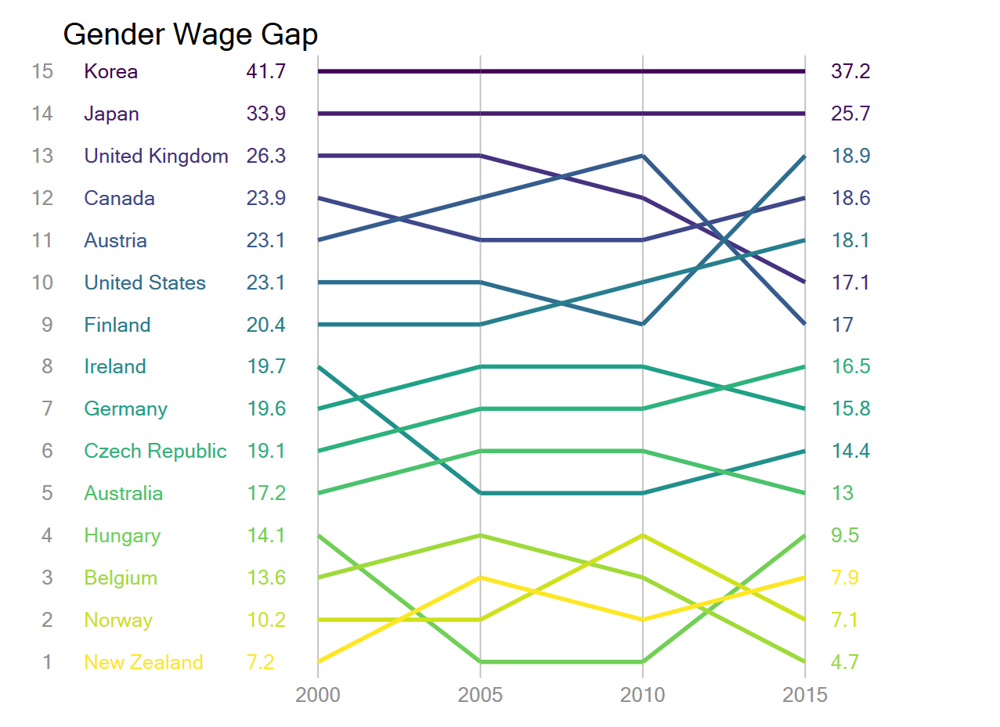
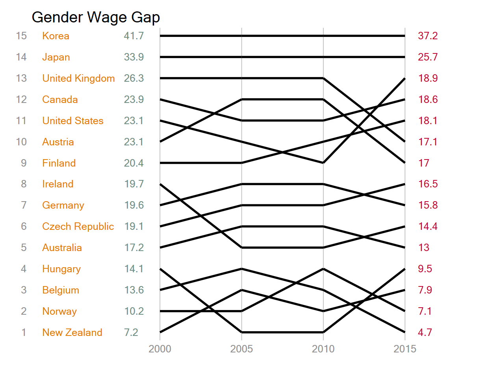
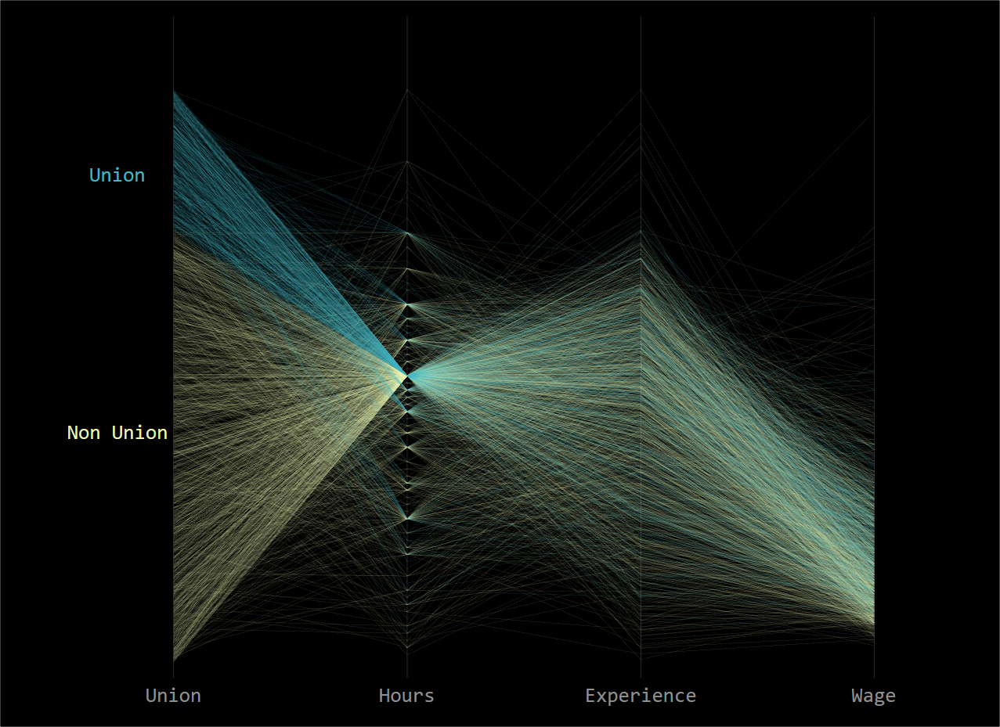

https://mthevenin.github.io/stata_fr/graphiques.html#552_Parallel_ccordinates_plot

Préapration des données
reshape pour générer une variable par annéeclear
import delimited ///"https://raw.githubusercontent.com/holtzy/data_to_viz/master/Example_dataset/9_OneNumSevCatSubgroupOneObs.csv"
bysort country: gen N=_N
keep if N==4
drop if country=="OECD - Average"
reshape wide value, i(country) j(time)
Valeurs de y
sort value2000
gen r1 = _n
sort value2005
gen r2 = _n
sort value2010
gen r3 = _n
sort value2015
gen r4 = _n
gsort -r1
/*
+------------------------------------+
| country r1 r2 r3 r4 |
|------------------------------------|
1. | Korea 15 15 15 15 |
2. | Japan 14 14 14 14 |
3. | United Kingdom 13 13 13 10 |
4. | Canada 12 11 11 12 |
5. | United States 11 10 9 13 |
|------------------------------------|
6. | Austria 10 12 12 9 |
7. | Finland 9 9 10 11 |
8. | Ireland 8 5 5 6 |
9. | Germany 7 8 8 7 |
10. | Czech Republic 6 7 7 8 |
|------------------------------------|
11. | Australia 5 6 6 5 |
12. | Hungary 4 1 1 4 |
13. | Belgium 3 4 2 1 |
14. | Norway 2 2 4 2 |
15. | New Zealand 1 3 3 3 |
+------------------------------------+
*/Valeurs de x
gen x1=1
gen x2=2
gen x3=3
gen x4=4
gen x0= -.5
gen x0b= .5
gen xn=4.1Syntaxe du graphique
pcspike génère les droites: 2000 à 2005: (r1,x1) jusqu’à (r2,x2) 2005 à 2010: (r2,x2) jusqu’à (r3,x3) 2010 à 2010: (r3,x3) jusqu’à (r4,x4)* récupération du nombre d'observations
describe
local N = `r(N)'
* on génère les couleurs qui seront affectées à chaque pays
colorpalette viridis, n(15) nograph
* syntaxe du graphique
forvalue i=1/`N' {
local spik1 `spik1' pcspike r1 x1 r2 x2 in `i' , lc("`r(p`i')'") lw(.6) ||
local spik2 `spik2' pcspike r2 x2 r3 x3 in `i' , lc("`r(p`i')'") lw(.6) ||
local spik3 `spik3' pcspike r3 x3 r4 x4 in `i' , lc("`r(p`i')'") lw(.6) ||
local scat0 `scat0' scatter r1 x0 in `i' , mc(%0) mlab(country) mlabc("`r(p`i')'") ||
local scat0 `scat0' scatter r1 x0b in `i' , mc(%0) mlab(value2000) mlabc("`r(p`i')'") ||
local scatn `scatn' scatter r4 xn in `i' , mc(%0) mlab(value2015) mlabc("`r(p`i')'") ||
}Exécution du graphique
tw `spik1' `spik2' `spik3' /*`scat1' `scat2'*/ `scat0' `scatn' ///
, legend(off) ///
xlabel(1 "2000" 2 "2005" 3 "2010" 4 "2015") xscale(r(0 5)) ///
ylabel(1(1)15 , angle(0) nogrid) title("Gender Wage Gap", pos(11))Programme complet
clear
import delimited ///
"https://raw.githubusercontent.com/holtzy/data_to_viz/master/Example_dataset/9_OneNumSevCatSubgroupOneObs.csv"
grstyle init
grstyle set mesh, compact
bysort country: gen N=_N
keep if N==4
drop if country=="OECD - Average"
reshape wide value, i(country) j(time)
sort value2000
gen r1 = _n
sort value2005
gen r2 = _n
sort value2010
gen r3 = _n
sort value2015
gen r4 = _n
gsort -r1
gen x1=1
gen x2=2
gen x3=3
gen x4=4
gen x0= -.5
gen x0b= .5
gen xn=4.1
des
local N = `r(N)'
colorpalette viridis, n(15) nograph intensity(1.0)
forvalue i=1/`N' {
local spik1 `spik1' pcspike r1 x1 r2 x2 in `i' , lc("`r(p`i')'") lw(.6) ||
local spik2 `spik2' pcspike r2 x2 r3 x3 in `i' , lc("`r(p`i')'") lw(.6) ||
local spik3 `spik3' pcspike r3 x3 r4 x4 in `i' , lc("`r(p`i')'") lw(.6) ||
local scat0 `scat0' scatter r1 x0 in `i' , mc(%0) mlab(country) mlabc("`r(p`i')'") ||
local scat0 `scat0' scatter r1 x0b in `i' , mc(%0) mlab(value2000) mlabc("`r(p`i')'") ||
local scatn `scatn' scatter r4 xn in `i' , mc(%0) mlab(value2015) mlabc("`r(p`i')'") ||
}
tw `spik1' `spik2' `spik3' `scat0' `scatn' ///
, legend(off) ///
xlabel(1 "2000" 2 "2005" 3 "2010" 4 "2015") xscale(r(0 5)) ///
ylabel(1(1)15 , angle(0) nogrid) title("Gender Wage Gap", pos(11))Version simplifiée avec une seule couleur
local lops lc(black) lw(.6)
tw pcspike r1 x1 r2 x2 , `lops' ///
|| pcspike r2 x2 r3 x3 , `lops' ///
|| pcspike r3 x3 r4 x4 , `lops' ///
|| scatter r1 x0 , mc(%0) mlab(country) ///
|| scatter r1 x0b , mc(%0) mlab(value2000) ///
|| scatter r4 xn , mc(%0) mlab(value2015) ///
|| , legend(off) ///
xlabel(1 "2000" 2 "2005" 3 "2010" 4 "2015") xscale(r(0 5)) ///
ylabel(1(1)15 , angle(0) nogrid) title("Gender Wage Gap", pos(11))
Juste une simplication qui retire les éléments textes (report des moyennes) et simplifie les couleurs

sysuse nlsw88, clear
graph set window fontface "Consolas"
* drop occup trop peu d'observation
*drop if inlist(occupation,9,10,12)
gen x1=0
gen x2=.5
gen x3=1
gen x4=1.5
* Standardisation observations y (0,1)
* y/max(y) pour hours, ttl_exp et wage
foreach var of varlist ttl_exp hours wage {
qui sum `var', d
gen _`var' = `var'/`r(max)'
}
* Valeurs y aléatoires pour statut syndical
qui sum union
local m= 1 - `r(mean)'
gen _munion = `m'
gen _union = runiform(0,`m') if union==0
replace _union = runiform(`m',1) if union==1
* Couleurs
local lw ".01"
colorpalette YlGnBu, select(2) opacity(40) nograph
local c1 `""`r(p1)'""'
colorpalette YlGnBu, select(5) opacity(50) nograph
local c2 `""`r(p1)'""'
colorpalette YlGnBu, select(2) nograph
local c3 `""`r(p1)'""'
colorpalette YlGnBu, select(5) nograph
local c4 `""`r(p1)'""'
* Graphique
tw pcspike _union x1 _hours x2 if union==0, lw(`lw') lc(`c1') ///
|| pcspike _hours x2 _ttl_exp x3 if union==0, lw(`lw') lc(`c1') ///
|| pcspike _ttl_exp x3 _wage x4 if union==0, lw(`lw') lc(`c1') ///
|| pcspike _union x1 _hours x2 if union==1, lw(`lw') lc(`c2') ///
|| pcspike _hours x2 _ttl_exp x3 if union==1, lw(`lw') lc(`c2') ///
|| pcspike _ttl_exp x3 _wage x4 if union==1, lw(`lw') lc(`c2') ///
|| , plotr(color(black)) graphr(color(black)) legend(off) ///
ylabel(,glw(0) labc(%0)) ///
xlabel(0 "Union" .5 "Hours" 1 "Experience" 1.5 "Wage", glw(vvthin) glc(gs12)) ///
xscale(r(-.2 1.7)) yscale(r(0 1.1)) ///
text(0.4 -.12 "Non Union", color(`c3')) ///
text(0.85 -.12 "Union", color(`c4'))